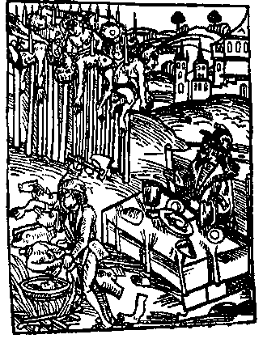

WolfesBlogArchives: September 2006
Saturday, September 30, 2006
WALK SOFTLY BUT CARRY A BIG STICK
Claire is absolutely right. Decent people the world over can and should shun the US and all things American. The abominable cowardice and viciousness of our "representatives" cannot be excused. The naked face of tyranny has been revealed, and we as a nation have sanctified it with a new law. Read as much as you can stand about Maher Arar if you really want to see this retroactive "law" at work.
China will have a Trillion dollars any day now.
That's Trillion with a 'T.' One thousand billions, one million millions, 1,000,000,000,000 pieces of fancy printed paper backed by nothing but "the full faith and credit" of the federal government. China and Japan together hold over 1.8 Trillion promises.
We gave the $1.8 Trillion to the Japanese and Chinese in return for tangible goods that US consumers purchased. At the same time, the War parties have destroyed at least $0.8 Trillion and more likely $2 Trillion of the nation's wealth.
A Trillion here, a Trillion there, it adds up real quick. The money spent on war is truly gone, utterly wasted, blasted to bits by bombs, leaving only tens of thousands of maimed and murdered to remind us. Blood and treasure, squandered.
China doesn't have to dump the dollar to inflict great harm. Chinese purchases of spiraling federal war debt have kept US interest rates low and US stock markets at nosebleed levels. Should China or Japan merely slow or stop their rate of purchase, the effects on the US economy would be immediate and dramatic.
Slowing their purchases is exactly what China plans to do. Eventually, China and Japan will use all those dollars to buy things THEY want. Those Trillions presently cluttering vaults and halls will enter the economy, bidding up the price of literally everything.
China doesn't have to make any announcements. It needn't apply to the UN, or pass a new law. It simply has to stop buying dollars. Once the US economy has been thrown into recession or depression, China can use its Trillion-dollar stick to whack the US over and over again, buying oil companies, real estate, tech companies, or anything else it pleases, all at bargain basement prices.
Who would blame them? We are bullies and worse, and bullies need a good thrashing. We won't get what we want, but we will certainly get what we deserve.
Posted by Silver @ 09:19 AM CST [Link]
Friday, September 29, 2006
YOU KNOW ... THIS LAW ... This "Military Commisions Act," is so foul that once it's signed the nations of the world should shun the U.S. as a pariah. They should levy sanctions against us. They should refuse to trade with us. They should bring court cases against our "leaders" for war crimes. Just read the list of horrors in that legislation (scroll down to the bullet points if you don't want to read the whole article, although it's excellent). The economic gnomes of the world should, just to express their contempt (and because the day is coming, anyway), dump the dollar and make the Euro the world's reserve currency.
You and I know that none of this, none of what's in that monstrous law, belongs in any country that lays claim to being decent and free. This law sure as hell doesn't belong in a country that GWB says is a world leader in opposing torture.
Honest to God if the U.N. sent blue berets to keep order in the streets of Washington, DC, I wouldn't think it was a totally bad thing -- as long as they were also there to depose the president and his entire morally corrupt, spiritually repugnant third-world warlord administration. Okay, I exaggerate on welcoming the blue berets. Ugh. Never. No way. If things get that bad, we should get rid of our own dictators, thank you. And to clarify, no I don't favor globalist courts, either.
But truly, between this hideous Stalinist law, two (and perhaps soon three), enormous wars of aggression, and "minor" little slip-ups like the NSA wiretaps, the United States no longer belongs in civilized company.
You and I don't deserve pariah status. But our "unitary executive" and his aparatchiks and nomenklatura sure do. Won't happen, of course. We're the 9,000-pound gorilla. WE do all the deposing, thank you. WE levy all the sanctions. Nobody will stand up to the might of the U.S. -- except the little guys with nothing to lose.
(I found the link through Jim Bovard's blog, where he wishes us all a "Happy Dictatorship Day.")
Posted by Claire @ 06:16 PM CST [Link]
Thursday, September 28, 2006
I JUST CREATED AN AMAZON.COM aSTORE FOR WOLFESBLOG. It's something new Amazon is offering affiliates. If this works out, updating my Amazon book/DVD selections will be about a thousand times easier (meaning I'll do it more often) and browsing should be more fun and varied for you.
I get to feature up to nine products, then Amazon chooses hundreds more (check the category links) based on the items Wolfesblog readers enjoy. My preliminary browse says their selections in some categories (like books) are pretty well targeted to Wolfesblogian interests. In other categories ... well, judge for yourself.
Check it out and let me know what you think.
As always, neither Debra nor I ever see any personal information on purchasers. We see what sells through our links, but never to whom.
Posted by Claire @ 06:41 AM CST [Link]
Wednesday, September 27, 2006
Boy, some people are really bigots. A lot of those bigots have badges -- and the power and desire to destroy the lives of other human beings just because those others choose to live their own lives peaceably and responsibly according to their own standards.
Posted by Claire @ 04:20 PM CST [Link]
Tuesday, September 26, 2006
"Time for some thrilling heroics." -Jayne Cobb
Raving Reporter Thunder here.
Many of you know that the TCF community has been overwhelmingly supportive of Rick Celata and family. In case you don't know, Rick's business, KT Ordnance, was broken into and he had several items that were stolen from him and these items are to be auctioned off by the thieves. That's basically what it boils down to.
Well, in an effort to help Rick and his family out, once again, we here at TCF are auctioning something else off.
This one's for all of you Firefly/Serenity fans out there.
Get all 9 mint condition issues of the Serenity comics, PLUS a second copy of Issue #1 with the Jayne Cobb cover, signed by the Hero of Canton himself, Adam Baldwin!!!
The only way this auction could get any better would be if it came with Vera herself!!
All proceeds of this auction will go to help the Celata family.
Bid early, bid often, bid high as this is for a good cause.
Posted by Thunder @ 05:24 PM CST [Link]
Monday, September 25, 2006
JIM BOVARD ON THE RIGHT-TO-TORTURE DEAL and America's new status as a banana republic (or Medieval fiefdom).
This is latest sign that our elected representatives in Washington believe that the federal government deserves absolute power over everyone in the world. Former Secretary of State Colin Powell warned recently that Bush’s efforts to gut the Geneva Conventions would cause the world to “doubt the moral basis of our fight against terrorism.”But more important, the Senate-White House torture deal should cause Americans to doubt the moral basis of their entire government.
Every time I think the U.S. government has reached a new moral low, the Busheviks surprise me and sink even lower. Oh, the irony of the fact that Bush got elected because of his superior "moral values." Superior to whose, I wonder? Vlad Tepes's?

Posted by Claire @ 11:33 AM CST [Link]
FOR YOUR MONDAY MORNING WORK AVOIDANCE and to remind us all (as if we needed reminding) never to respect our leaders, About.com brings us: a host of Bushisms. And if you still have any doubt about what you think of Our Beloved President, you can take the Bush Loyalty Quiz (requires Java Script turned on).
Simon Jester led me indirectly to these. He also sent along this lovely (if lefty) song you might just find yourself singing as you make your way through the cubicle maze of life.
Posted by Claire @ 08:43 AM CST [Link]
Sunday, September 24, 2006
1-MAN HELICOPTER
Silver here. Bad news travels like wildfire, good news travels slow. It's time for some good news.People have dreamed of personal air transportation long before the Wright brothers. An accomplished engine developer in Japan has mated 4 incredibly small and light engines to an equally amazing transmission to produce an ultralight helicopter.
The Gen-H4 is billed as the world's smallest one-man helicopter. What's more, this isn't vaporware like flying cars, nor does it cost a million dollars. Plump down $30,000, spend 40-60 hours building the contraption, then teach yourself to fly it. Yup, teach yourself. There is that little drawback of 1-man aircraft. I would strongly recommend a lot of practice with your feet on the ground and no wind. Wind is a fact of life for pilots, and the descriptions are somewhat vague on how this craft handles in windy or gusty conditions. Getting flipped over with counter-rotating blades a few feet above you doesn't sound like much fun.
More good news: this is an ultralight aircraft, no license required from the FAA.
With a useful load of just 235 lb (the craft weighs 155 lb empty and carries only 30 lb of fuel) no enclosed cockpit, and no ability to auto-rotate in the event of a transmission failure, this isn't exactly practical for commuting to work. It does look like a heck of a lot of fun to fly (WMV, 2.6 MB).
Despite gravity,
to spite gravity,
we fly.
-George PotterPosted by Silver @ 10:39 AM CST [Link]
SHOULD HAVE REALIZED when I cheered that small rebellion in the Senate against Bushevik torture legislation that the revolt was all for show. The deal they ended up making with the Torturer-in-Chief is indeed just another "Compact with Evil".
So they would give Bush himself the authority to decide which forms of torture are acceptible. Real sensible, that. Real humane. I'm becoming ashamed to be an American.
Posted by Claire @ 09:58 AM CST [Link]
BUY GOLD AND SILVER
Howard Ruff, who advised against gold for 22 years, answers the question Why Gold & Silver Now?Silver says: Buy and hold (or hide) the metal. Bullion coins, silver rounds, bags of "junk" (pre-1965) silver coins. Gold mining shares are extremely risky. Too many gold mines are nothing more than a hole in the ground with a liar standing on top. (These words are often attributed to Mark Twain, but some doubt that claim.) ETFs and closed-end funds like CEF and CLGLF can be used to hold IRA, 401(k) and other tax-advantaged funds, but ONLY if you know the difference between an "exchange traded fund" and a "closed end mutual fund."
Lew Rockwell explains that "owning and holding gold symbolizes independence and freedom" in his latest essay What Government Is Doing to Our Money. "Thus does the goldbug understand far more about the nature of things than others who blithely assume that wealth can be created by a printing press."
Posted by Silver @ 07:14 AM CST [Link]
Saturday, September 23, 2006
RUSSELL KANNING. The Picket Line does a nice little interview with one of the freedom movement's most prominent radicals of resistance.
Posted by Claire @ 12:48 PM CST [Link]
Friday, September 22, 2006
JOHN YOO. HOLY CRAP. THAT IS ONE SICK INDIVIDUAL. Jim Bovard takes his rhetorical rapier to America's torture czar and lays open a man whose inner workings are even more putrid than you'd imagine from the policies he's advanced.
Not since Gen. Curtis LeMay has such a madman been tolerated within the United States power structure. And Yoo may be even more poisonous. LeMay at least could pretend that his ruthless pursuit of war was noble. And he could be publicly scorned. Yoo is an invisible bureaucratic worm, eating at America's innards, unseen.
I also hadn't realized that in addition to being America's chief torturer, he was the man who laid the foundations for the infamous "unitary" presidency, above all law. A worm? No, the original evil Grand Vizier.
From Jim's article:
Two weeks after 9/11, Yoo, in a memo to the White House, claimed that the attacks gave the U.S. government carte blanche for war anywhere in the world. Yoo suggested that “an American attack in South America or Southeast Asia might be a surprise to the terrorists,” since they were expecting the U.S. to target Afghanistan. Yoo assured the White House that “the President’s broad constitutional power ... would allow the President to [take] whatever actions he deems appropriate to pre-empt or respond to terrorist threats from new quarters.” Yoo’s assurances may have inspired Bush’s declaration a few weeks later that “So long as anybody’s terrorizing established governments, there needs to be a war.”Yoo wrote a Torturers’ Emancipation Proclamation memo while serving as deputy assistant attorney general. He informed the White House in August 2002 that it could scorn federal law because “the President enjoys complete discretion in the exercise of his Commander-in-Chief authority and in conducting operations against hostile forces ... . we will not read a criminal statute as infringing on the President’s ultimate authority in these areas.” Thus, the “commander-in-chief” title automatically swallows up the rest of the Constitution.
Posted by Claire @ 06:34 PM CST [Link]
THE NEW FILM OF ALL THE KING'S MEN is getting savagely bad reviews. But that just gives an excuse to re-visit the the fantastic 1949 version.
That film won the Best Picture Oscar and a Best Actor award for Broderick Crawford. Crawford plays Willy Stark, an idealistic populist from a dirt-poor background who rises to political office despite the machinations of corrupt men -- then becomes a monster of oozing corruption himself, all the while promising and doling out endless tax-funded services. (The character is based on Huey "Kingfish" Long of Louisiana.)
Usually when I watch 50-year-old "classics," I'm disappointed. They're too slow, too stagey, too unrealistic. I can see that they were good in their day, but they don't look so good now. (Filmmaking improved a lot starting about 1975, IMHO.) But the 1949 All the King's Men just blew me away. Other than being in black & white, it could have been made yesterday. It's dynamite. Whether you bother with the new version or not, check out the original on DVD.
Posted by Claire @ 08:30 AM CST [Link]
Thursday, September 21, 2006
AN OUNCE OF GOOD NEWS for cannabis smokers and drug-war opponents:
"There aren't enough federal resources on the entire planet to handle ounce size marijuana possession," Jeffrey Sweetin, a DEA agent said. "Your viewers should understand if this passes, we're really legitimately legalizing an ounce of marijuana. They're not going to be prosecuted."In Colorado, that is. Unfortunately, the reason one ounce of weed became a federal issue (for purposes of the quoted article, that is) is that when the city of Denver recently legalized possession of an ounce or less, Denver cops kept right on persecuting. They simply used state, not city, law. (So who do city cops actually work for, we might ask?) So the question became, "If the state finally does the sensible and humane thing, will cops still be able to persecute using fed law?"
For once, the news from the drug war is good. And it ties in with what I wrote this morning: There aren't enough federal resources on the entire planet ... to control all who are determined to live their own lives as they see fit.
(Thanks once again to SJ.)
Posted by Claire @ 10:46 AM CST [Link]
ON THE LAST PLEASANT DAY OF SUMMER Pyramid Man and his son came to Cabin Sweet Cabin for a sit and chat. Pyramid Man is one of my favorite people, and I like his son just as much. Both are blessed with warm personalities and curious, wide-ranging, paradigm-challenging minds. Whatever subject arises, they'll both find something intriguing to say about it.
Even more fun, they'll say very different things. Pyramid Man is intuitive, a little New Agey. His son, on the other hand, presses the case for logic and reason. But both are so quick-thinking and such nice human beings, it's unfailingly fun to be with them.
This time they brought apples from their orchard, a big sack of them. Large green ones, tiny red ones. But all crisp and tasty, and so fresh they fired little projectiles of juice with each bite. Nothing like storeboughts.
[more]Posted by Claire @ 08:37 AM CST [Link]
Wednesday, September 20, 2006
I RECEIVED THE FOLLOWING RESPONSE to my recent rant re the relative violence of Christians and Muslims. It's well-taken (and good humored) and I have just one difference with it. [more]
Posted by Claire @ 01:07 PM CST [Link]
Monday, September 18, 2006
SO THE POPE QUOTED A REMARK from a Medieval manuscript about early Muslims making converts at sword-point. (Which in fact they did.) And hardly anybody steps in to note that Christians have an even longer, bloodier, and more aggressive history of slaughtering in the name of Jesus.
(Here's one of the few commentators on the present mess who gives some limited examples of early Christians being bloodier than their Muslim enemies.)
(And here's a transcript of the pope's speech in case you wonder whether the media -- believe it or not -- might actually be blowing the fooraw up out of proportion and taking the remark out of context. Although in fact it was a pretty stupid passage for an alleged world leader to quote in this tinderbox age, even if said leader really is just a clueless academic raised to the position of a papal placeholder.)
And then all the "reasonable" people agree with the pope's statement that "violence is incompatible with the nature of God." Which just goes to show that none of the reasonable people, including the pope, have actually read the Old Testament. Because you know damn well that the Old Bearded Dude makes George W. Bush look like a humanitarian.
And then, because they're mad at the pope for saying that somebody else once said (and remember, it's true) that Muslims converted "by the sword," groups of outraged Muslims ... um, threaten to convert everybody at sword-point and smash the cross and conquor Rome.
Yeah, that's a nice way of demonstrating the peacefulness of your religion. Uh huh.
There's only one thing perfectly clear in all this. And that's that next time some yahoo tries to convert me to his religion by informing me that God loves me personally like my own cuddly little celestial teddy bear, but oh by the way He's going to fry me in a vat of hot oil for several trillion years if I don't acknowledge His All-Bountiful Goodness by believing that he had his only son tortured and slaughtered for my sake* (something that happens about once a week -- and hint, hint, the most aggressive proseletyzers aren't Islamic fundamentalists), I'll have all the excuse I need to punch him in the nose. And call myself the soul of reasonable moderation.
-----
* Which demonstrates the truth of the above comparison with GWB. I mean, can you picture Dubya sending Jenna or whatsername off on a mission knowing for sure she'd be hung up on a cross for hours, stuck with a sword, and generally reviled, merely to produce a religion that would end up whacking millions of innocents over a couple of bloody millennia? Your kid he'd do that to, maybe. But hardly his own. And unlike God, he's got a spare.
Posted by Claire @ 01:50 PM CST [Link]
Posted by Claire @ 08:58 AM CST [Link]
Sunday, September 17, 2006
TODAY IS CONSTITUTION DAY. Not a big item on my social calendar. But apparently the U.S. Constitution is important enough to President Bush (what, you didn't notice???) that he's decreed an entire week of celebrations for it. Jim Bovard has some suggestions on how to celebrate the Constitution in the Bushevik era. (Readers can add a few suggestions of their own, too.)
Posted by Claire @ 11:23 AM CST [Link]
THE US MINT DOESN'T LIKE THE LIBERTY DOLLAR by Silver
Monopolies, which are invariably maintained by government force, hate competition. They aren't used to being challenged. Now the US Mint has warned that Liberty Dollars are not legal tender.
This is not news. Legal tender laws in the US make bits of colored paper the only lawful money. Using silver and gold, the metals selected by free markets for use as money for the past 60 centuries or so, is strictly verboten, no matter what the Constitution says.
What IS legal is barter. Anyone is free to try and convince a merchant or customer to accept an ounce of silver instead of a piece of colored paper eblazoned with "20" and an idealized drawing of a dead white politician. The Liberty Dollar website quotes a spokesthing for the Federal Reserve:
There is no law that says goods and services must be paid for with Federal Reserve notes. Parties entering into a transaction can establish any medium of exchange that is agreed upon.The bluster in the Mint's press release about it being a "Federal crime to pass, or attempt to pass, any coins of gold or silver intended for use as current money except as authorized by law" is pure hot air. Our masters have decreed that it is illegal to try and fool someone into thinking that a silver coin is the same thing as a piece of paper or a tiny chunk of plated base metal alloy. No blind man would ever be so mistaken.
What is happening here is that the Mint doesn't like the Liberty Dollar people using the same or similar artwork on their coins. I can also imagine, based on a few personal interactions with Liberty Dollar boosters, that a few have become a mite too aggressive in their barter negotiations. It's a small step from saying "This coin is as good as money" to saying "This coin IS money." The Liberty Dollar people claim there are nearly a million coins and certificates in circulation. That doesn't make the coins legal tender, and each and every transaction requires a nuanced, effective sales pitch. You can't force anyone to take a Liberty Dollar. Trying to do so is not only illegal, it is wrong.
In my opinion, the Liberty Dollar program has fundamental flaws, discussed below and at some length in the 2004-vintage TCF thread Tell Me About Gold. That said, I welcome all who challenge the authority and expose the insanity of our government. Flawed or otherwise, the Liberty Dollar challenges federal hegemony over our money. Money is inextricably tied to freedom, and we will need real money to achieve Sustainable Freedom.
Seeing the Mint bark and fume about Liberty Dollars is good news; one more crack in the crumbling facade that hides the hideous, decaying corpse that is our government.
[more]Posted by Silver @ 09:32 AM CST [Link]
Friday, September 15, 2006
THE DOORS ARE NOW OPEN for the 2006 Hardyville Film Festival. Be sure to vote for your favorites!
This year's festival couldn't have happened without the cheerful creativity of Wally Conger and Backwoods Home webmaster (and my movie-review swapping pal), Oliver Del Signore.
Speaking of Wally ... I may not consider myself part of the Movement of the Libertarian Left, but I think this poster and its message are hot. The film that inspired Wally's burst of art is among this year's Hardy nominees, in classics.
Posted by Claire @ 03:32 PM CST [Link]
SAVE A LIFE, GET ARRESTED. This is prime evidence (if more is needed) that what's moral and what's legal often don't mesh.
This sad, illegal, freelance rescue of a dying dog had to come two days after neighbors began calling "the authorities" to get help. Sounds as if the "public servants" in the police department also treated the rescuing human almost as bad as the Arnold family treated its dog.
(From TC on a higher plane.)
Posted by Claire @ 03:24 PM CST [Link]
Thursday, September 14, 2006
"COLIN POWELL IS A MAN OF CHARACTER." So commentators have said all these years. Over and over. But from the outside, at least, he looked as willing as anybody else to go along to get along -- or at least keep his mouth shut when he objected to evil political goings on. Finally, he's taken a public stand against one of the egregious immoralities of the Busheviks.
Looks as if a small revolt is beginning, too, among the Rs in the Senate. :-)
Too small a revolt to mean much, of course. But hey, growing a vertebrae or two, howver small, is improvement over having no spine at all.
Posted by Claire @ 07:28 PM CST [Link]
Wednesday, September 13, 2006
I READ TALES LIKE THIS and I think about my cousin who toured the Soviet Union back in the 1970s.
At the end of a multi-day river voyage, "the authorities" lined up all the tourists who'd photographed buildings and statues along the banks and confiscated their cameras. The boat had been full of secret police or their informers, making note of who took pictures. My cousin was savvy enough to have brought two cameras. One he handed over like a good little sheep. The other -- the one that actually contained the film with his riverside photos -- he brought home.
Those photos were boring as all get out. Lots of collosal, ugly "workers of the world" kind of statues and a few low, ugly blurs of buildings on the horizon. But how we all laughed at my cousin's coup. And how we shook our heads at the bizarre paranoia of the Soviet state. Who could imagine living in a country so screwed up that tourists couldn't take photographs?
Now ... a pair of American journalists are in trouble with Homeland (Actung!) Security for filming an Exxon oil refinery without federal government permission. And to make matters even more bizarre, it's a refinery whose photo and exact coordinates are available to all the world on Google Maps.
Is this a police state we're coming up on? Or is it a madhouse? Whatever it is, don't dare take a picture of it, Comrade!
Posted by Claire @ 06:49 PM CST [Link]
HOO BOY! I LOVE IT WHEN A FREEDOM BOOK ends as great as it begins. The book in question is one I mentioned last week, The Hunt for Confederate Gold, Thomas Moore's debut novel.
Since this is obviously intended to be the first novel among many, the news is even better. My review is below. [more]
Posted by Claire @ 03:20 PM CST [Link]
Tuesday, September 12, 2006
I WROTE SOME WORDS YESTERDAY about the maudlin mess of malarky being poured over the sorry ruins of the WTC. But Will Grigg wrote far better ones. Read his "Why Do Our Rulers Hate America?" Man. Truth spoken with passion.
Will is also senior editor of The New American. Never thought I'd see the day when I'd agree so powerfully with a honcho at the John Birch Society. Aaron Zelman has spoken highly of Will Grigg, but I never knew.
Posted by Claire @ 07:35 PM CST [Link]
Monday, September 11, 2006
NPR IS NO BETTER THAN FOX NEWS when it comes to "depth" (and I use the word loosely) of 9-11 coverage. True, they may interview people like the woman who became an atheist activist after the fall of the WTC persuaded her that there was no divine purpose behind life. But their coverage is still on the "firemen as heroes" and "how were our lives changed" variety. Neither liberal nor conservative news coverage is asking the hard questions -- at least not this week.
I still feel shell-shocked and heartbroken by the memory of the towers burning and such wanton slaughter. Accounts like "Cousin Scott" by Chris Matthew Sciabarra bring the horror back with choking vividness. And I defy any dog lover to read, Alexander Theodore's "Welcome at the Rainbow Bridge" even now and not tear up. Five years later, I still bawl merely from typing out the title. (The Rainbow Bridge, for those who aren't into pet lore & legend, is the place where the souls of beloved dead dogs wait for their humans.)
But (like a lot of you out there?) I feel far more shell-shocked and heartbroken by the wanton devastation the alleged "good guys" have unleashed on the world and their own nation in the five years since.
I've been avoiding today's news coverage because I couldn't bear all the empty-headed flag-waving and hand-wringing that's replaced our capacity for actual thought. So when I got in the truck a while ago, I skipped over to a newish NPR affiliate that I knew had a local folk music show at this hour. I was listening away and enjoying the Celtic and bluegrass tinged music when I suddenly realized that every, single song they were playing was -- I had to start laughing my head off -- a jab at the Bushoisie and its wars and propagandistic jingoism. One song (scroll down) even said of the WTC:
Now there's flags flying on every lamp post
Red white and blue 'gainst the sky
It's September and I can't help but think that
It looks like the Fourth of JulyI drove home smiling. Today's a sad day, but thank heaven somebody, somewhere still has enough balls not to sink into the maudlin wallow.
Posted by Claire @ 02:53 PM CST [Link]
TERRORISTS KILLED 3,000 AMERICANS. So Bush kills nearly 3,000 Americans in Iraq -- which had nothing to do with 9-11. And that's not to mention the tens of thousands of Iraqi dead.
And Osama bin Laden walks free.
This makes sense to somebody?
Posted by Claire @ 09:23 AM CST [Link]
Friday, September 8, 2006
LOL! THUNDER POSTS ANOTHER EXAMPLE of why and how the Keystone DEA has lost the war on cannabis. They're heroically saving us from ... ditchweed!
Posted by Claire @ 09:41 AM CST [Link]
Thursday, September 7, 2006
INFORMATION BEATS PROHIBITION. EVERY TIME. I've never been active in the cannabis legalization movement. Sympathetic for sure. But it's never been my fight. Nor has "marijuana" (a name originally chosen by the antis because they thought it sounded so "Latin" -- like those jazz musicians who were going to seduce our pure white daughters after tempting them with "reefer") ever been my drug. As a young rebel, I was far more into hard-core psychedelics. As an older rebel ... well, a nice cup of hot tea suffices. (Actual tea; not as in, "Take a toke, a tea stick ...")
Until recently, cannabis has been off in a far corner of my consciousness.
Still ... a few mentions of cannabis here on the blog brought me a couple of intriguing URLs. A nice guy from rollitup.org asked for a link exchange. And when I ran that site past a cannabis connoisseur, he mentioned that he used to hang out at YaHooka.com (a name that makes me laugh every time I think of it). (P.S. Sorry, I had this link wrong earlier!)
A major activity at both these sites is talking about growing cannabis. Where to purchase seeds. What types of lights to use. How to hide a crop. How to prune a plant. How to start plants from cuttings. How to grow hydroponically or organically. [more]
Posted by Claire @ 10:21 PM CST [Link]
Wednesday, September 6, 2006
DO YOU OWN A POLITICALLY INCORRECT DOG? You know, one of those breeds that's "a killing machine on a leash" or "too dangerous to be in our community"? From time to time, this label falls on different breeds: German shepherds, rottweilers, great Danes, pit bulls, mastiffs, dobermans, etc. When it does, breed bigots demand mass round-ups and slaughter of innocent animals, or at least that "those dogs" be segregated from their communities.
I have a little pit-mix who loves all human beings without reservation. But even he -- tough-looking little devil that he is -- has been reviled on the street by prejudiced people.
Well now, from Australia, comes the solution for making our beloved beasties politically correct again. Disguise your dog as a ... well, see for yourself. A picture is indeed worth 10,000 words.
Posted by Claire @ 09:20 AM CST [Link]
THE HUNT FOR CONFEDERATE GOLD. Yesterday evening I received a copy of The Hunt for Confederate Gold, the debut novel by Thomas Moore (whose almost-scary bio you'll find behind that Amazon.com link).
People are always telling me about freedom novels they "couldn't put down." I get copies and I can scarcely pick them up, they're so dull or badly written. But this ... well, it's the real deal. By early a.m. I was 2/3 of the way through and reluctant to set the book aside and go to sleep. I won't say more until I've finished reading. But the Amazon descriptions and reviews provide a good introduction. From what I've seen so far, I agree 100 percent with the review by "D. Jones 'Georgia Confederate.'"
More when I'm done.
Posted by Claire @ 09:11 AM CST [Link]
Sunday, September 3, 2006
&^%$#@ING CIVIC JINGOISM. The little town at the foot of my hill has its annual end-of-summer bash this weekend. The event tends to be charmingly pathetic. The weather gods, for one thing, usually curse it. And you have to be small-town born & bred (which I'm not) to find its entertainments entertaining.
But I go every year just because ... well, you know. Gotta buy an elephant ear or try a ring toss to be part of the community (and it's a good community). I always run into somebody who can fill me in on the latest gossip. Sometimes I even catch a piece of candy along the parade route. :-)
This year, for the first time in memory, the weather is gem-perfect. But I ain't down there. The event mucky-mucks decided this year's theme would be "Support Our Troops." I saw all those parade floats lining up this morning, every one of 'em dripping in the colors of George W. Bush and his wars -- and a century of wars to end all wars and wars to make the world safe for democracy.
People always say you can "support the troops" without supporting the war. And I do support some troops -- like DrillSgtK, for instance, who supports freedom. With good cheer, I'll support Lt. Ehren Watada. But support the murderers of Haditha? No thanks. Or the guys who raped that 14-year-old and killed her and her family? Uh ... I'll pass. Support flyers bombing civilians back into the stone age? Support people who still believe that Saddam Hussein had something to do with 9-11 and that's why we have to whack Iraq? The inbred sub-morons mugging for the cameras at Abu Ghraib? The tens of thousands who prefer not to think and are "only following orders"? Noooo ...
So I didn't go to town today. But town has come to me. I'm sitting here on my hill trying to write and getting an earful of both the parade and the free band concert after it. Every, single tune a celebration of war. The whole event an endorsement of mindless jingoism. Rockets' red glare and Halls of Montezuma. It's an assault on the senses. And on good sense. (On top of everything else, whoever got the idea that you could "support troops" by having rubber-duckie races and all-you-can eat corn-on-the-cob dinners?)
Why don't people think more about whom and what they support? When did martial music and sloganeering replace brains?
Posted by Claire @ 03:27 PM CST [Link]
IN MY MORE CYNICAL MOMENTS, I THINK ALL WRITERS ARE CRYBABIES, whining about how they have the hardest, most soul-wrenching job in the world. Oh weep weep, moan moan, poor artistic, doomed me. (Yeah, try digging ditches for a living, ya lily-fingered whimp and see how hard writing really is.)
Then I start a project and remember how much we have to cry about.
[more]Posted by Claire @ 02:50 PM CST [Link]
"KATRINA COTTAGES" FROM LOWE'S. Now there's a quick & easy way to small-house living. Not super-cheap. But if Lowe's goes nationwide with these kits (which apparently come complete with appliances), they might be doing many homestead newbies and simple-living advocates a nice favor. So far, only planned for distribution in Louisiana and Mississippi.
Don'tcha just love the market?
(Once again, from Simon Jester.)
Posted by Claire @ 02:41 PM CST [Link]
Ernesto, Fire, and the Stinky Slinky
Raving Reporter Thunder here.
Well, it's been almost 3 weeks since we gave up the lap of luxury and moved into our RV. We're still in the process of transitioning to the new place. Every day is an exercise in figuring out whether or not a particular item needs to stay or go. If it stays, then we have to figure out where is it going to go. There are constant trade-offs in that regard; you only have but so much room for things. Living in an RV is not for the unorganized. Lightning is great in that regard. Me? Not so much, but I'm getting better.
[more]
Posted by Thunder @ 10:22 AM CST [Link]
Friday, September 1, 2006
OH YEAH. and the new Hardyville column is online, too.
Posted by Claire @ 04:47 PM CST [Link]
WHAT SUSTAINABLE FREEDOM IS: The condition in which inspirational individuals and society's customary institutions reinforce freedom-oriented behavior. (My columns introducing the topic, in case you haven't read them: link, link, and link)
What it most emphatically is NOT: An attempt to hold freedom in stasis by "institutionalizing" it.
Every society encourages certain behaviors and discourages others. This is done more through social interaction and custom than by legislation or regulation.
Behavior can be reinforced cruelly (as with high-school girls backbiting each other or a pope declaring an inquisition). Behavior can be reinforced in benign ways (as when thoughtful, polite people inspire others to rise to their standards or when an e-commerce vendor offers options for anonymous transactions).
The behaviors reinforced can be negative or positive. Today we have multitudes of systems that encourage the growth of dependence (e.g. government subsidies and handouts, lobbying groups and NGOs whose sole purpose is to get more government). It's equally possible to have free-market systems that encourage the growth of independence (e.g. private ID or non-coercive online systems for establishing an individual's credibility).
Sustainable Freedom isn't a fixed set of behaviors -- though it is based on certain fixed principles like self-ownership, individual responsibility, and the right to private property. It is a social system that encourages the maxium possible individual freedom of (non-coercive) behavior -- and the independent, creative thinking that goes with that.
Posted by Claire @ 11:31 AM CST [Link]
I'M LATE GETTING TO THIS but because it's so important and so typical of the Kafkaesque monstrosity that the U.S. alleged justice system has become, better late than never. The property the BATFE seized from Richard Celata on June 7 (supposedly as potential evidence) has now been officially stolen. That is, with no criminal charges, no conviction, no nothing (other than sheer force), the ATF has now declared that it owns more than $11k worth of Celata's property and may sell or otherwise dispose of it as it wishes.
Why? Because the items may have been “used or acquired in violation of federal law” What law? Unspecified. What proof? None offered -- and none needed under the medieval rules of civil asset forfeiture.
The ATF must be wiped off the face of the earth. Bury the agency's rotten remains at a crossroads with a stake through its heart. Ditto the entire asset forfeiture system.